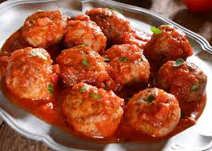

Meatballs Recipe

Description
Ingredients
- Minced Meat
- Onion
- Garlic
- Rice
- Tomato Sauce
- Cheese
- Besamel Sauce
Steps
- Combine chopped garlic, minced meat and rice into balls.
- Add oil to pan and put on medium heat.
- Fry the meatballs so they are brown from all sides.
- Take out meat and to the same pan add more oil and chopped onion
- When onion is soft add tomato sauce and meatballs. Add water to cover the meatballs.
- Cook until sauce is reduced and meatballs are cooked. Optionally take out meatballs and blend the sauce with stick blender.
- Serve with mashed potatoes.